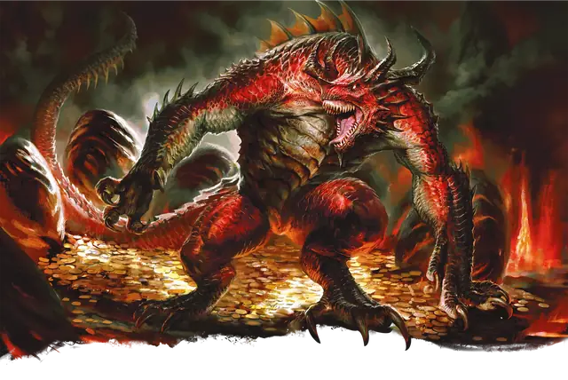

Полудракон
Half-Dragon
Средний Дракон, Нейтральный

Класс Защиты 18 Инициатива +5 (15)
Хиты 105 (14к8 + 42)
Скорость 40 футов
| мод | спас | ||
|---|---|---|---|
| СИЛ | 19 | +4 | +4 |
| ЛОВ | 14 | +2 | +5 |
| ТЕЛ | 16 | +3 | +3 |
| мод | спас | ||
|---|---|---|---|
| ИНТ | 10 | +0 | +0 |
| МДР | 15 | +2 | +5 |
| ХАР | 14 | +2 | +2 |
Сопротивление урону тип урона, определяемый Драконьим происхождением
Чувства Тёмное зрение 60 футов, пассивное Восприятие 15, Слепое зрение 10 футов
Языки Общий, Драконий
Опасность 5 (1 800 опыта; БВ +3)
Особенности
Драконье происхождение. Полудракон происходит от какого-то вида драконов, связанного с одним из следующих типов урона (по выбору Мастера): Кислота, Молния, Огонь, Холод, Яд. Этот выбор влияет на другие части статистики.
Действия
Мультиатака. Полудракон совершает две атаки Когтями.
Когти. Бросок рукопашной атаки: +7, досягаемость 10 фт. Попадание: 6 (1к4 + 4) Рубящего урона плюс 7 (2к6) урона того типа, что определён Драконьим происхождением.
Драконье дыхание (Перезарядка 5–6). Спасбросок Ловкости: Сл 14, каждое существо в 30-футовом Конусе. Провал: 28 (8к6) урона того типа, что определён Драконьим происхождением. Успех: Только половина урона.
Бонусные действия
Скачок. Полудракон прыгает на расстояние вплоть до 30 футов, затрачивая 10 футов перемещения.
Бонус мастерства +3
Среда обитания Любая
Сокровища Оружейные
Полудракон
Созданные драконами воители
Полудраконы рождаются в ритуалах, использующих эссенцию драконов, и служат своим создателям и собственным драконьим капризам. Большинство из их созданы цветными драконами, желающими слуг, в которых была бы толика их собственной мощи и величия. Полудраконы часто командуют прочими слугами злого дракона или действуют как его агенты в землях, где их владыка привлёк бы нежелательное внимание.
Полудраконы разделяют черты характера и устремления с драконами, от которых произошли. Цветные полудраконы обычно презирают своего создателя, даже служа тем же целям. Полудраконы с чертами металлических драконов особенно редки — они могут появиться из-за магических инцидентов, стараний безрассудных магов или как последний дар умирающего дракона.